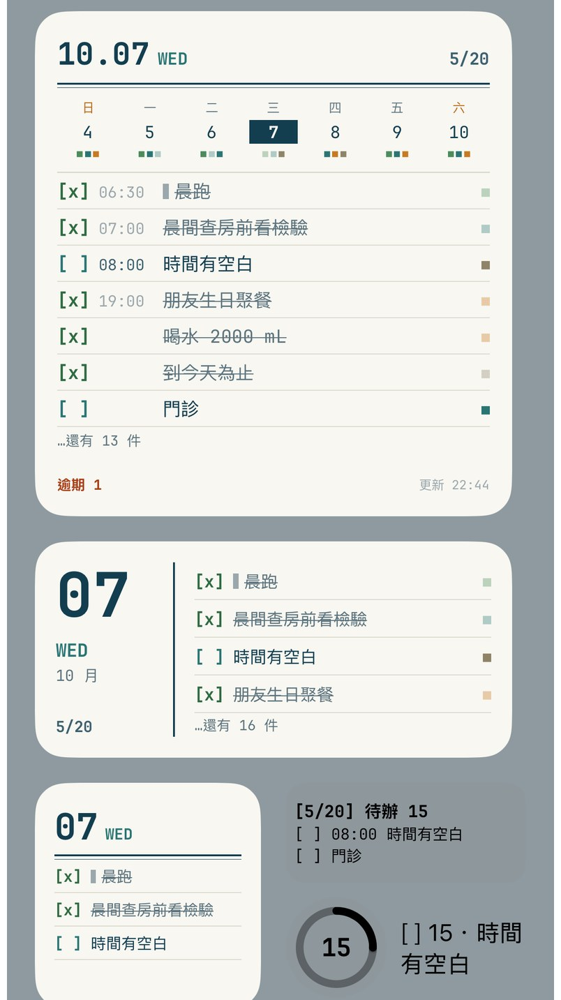
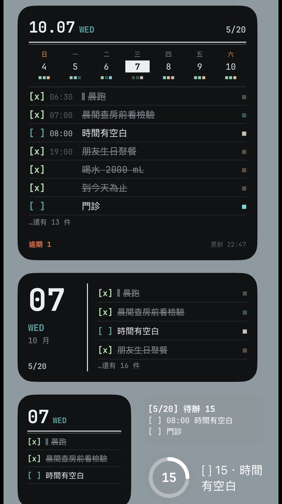
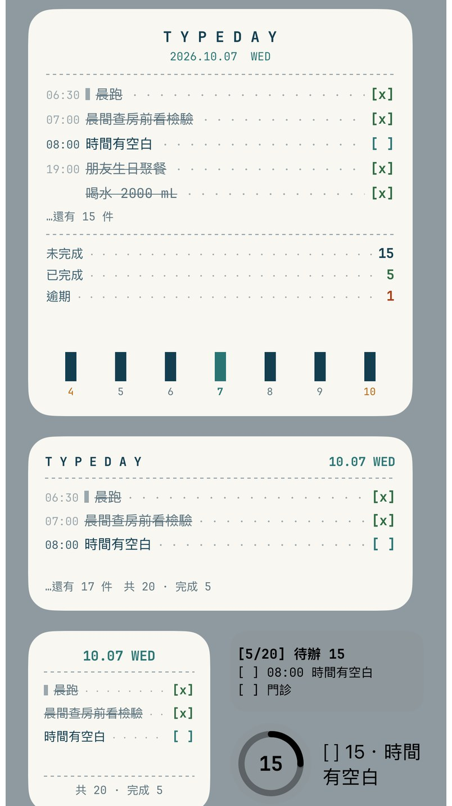
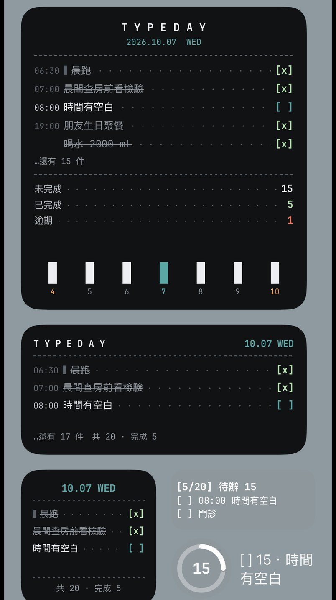

每張圖由上到下是：大型、中型、小型，右下是鎖定畫面的三種（長條、圓形進度、一行字）。都用 App 的打字機字體和顏色，假資料（不是你的資料）。
我推薦 A 打字稿：跟 App 打開後的打字機畫面最像，一眼就認得；B 收據比較有趣，但每件事的字比較小。回覆字母就好，也可以混搭（例如「A，但下面加 B 的條碼」）。
等寬打字字體＋格線紙：抬頭是「10.07 WED」和雙線，今天是反白方塊、選的那天加框，下面一行一行是 [ ]／[x] 的事項（做完的劃掉），右邊小方塊是類別色。中型左邊是一塊大字日期章。


像收銀機打出來的收據：置中的 T Y P E D A Y、虛線分隔、點線引導到右邊的 [ ]，下面是「未完成／已完成／逾期」的小計，最底下用條碼的高低表示這週每天有幾件（今天是青綠色），點一根就打開那天。

